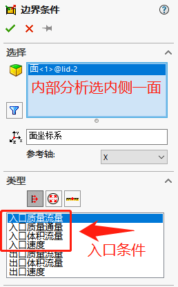
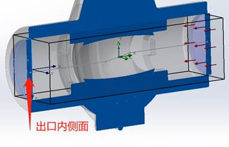
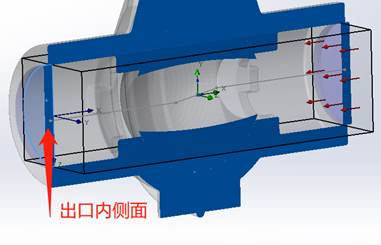

Simulation-流体Flow
SOLIDWORKS Flow Simulation 是一个计算流体力学 (CFD) 软件，可用来分析各种液流问题。 它计算的数量是由液流引起的压力分布和温度概貌。 以下显示的球阀装配体内液流动的求解过程。
SOLIDWORKS Flow Simulation一款功能强大的计算流体力学 (CFD) 工具，解决方案包括：
流体分析：计算流体力学 (CFD)：
热流体分析：计算流体流动和传热作用力，并研究移动的液体或气体对产品性能的影响
打开插件：

工具栏

模型准备
若你是分析内部流体仿真，你需要先创建一个封闭的空间区域，通过Flow工具栏的【工具-创建封盖】零件获得
向导设置
设置流体仿真的一些条件，其中包括：“项目名称”、“单位”、“分析类型”、“流体介质”、“壁面条件”、“初始条件”等。
项目名称

单位系统

分析类型
流体介质
壁面条件

初始条件

输入数据

计算域：
流体子域
多流体情况或是由部分区域是其他流体介质时使用，本次项目无效设置。
边界条件
入口条件：选择一个内侧的端面作为进口，选择入口速度，设置速度

出口条件：选择另一个内侧端面作为出口，出口设置为静压
 

目标
设置需要获得的结果
选择需要分析的参数

网格

结果
运行
设置好“输入数据”后，启用Flow工具栏【运行】命令

运行时你可能会遇到的报警：

结果
参考
进阶学习
1 | ..\SOLIDWORKS Corp\SOLIDWORKS Flow Simulation\lang\english\Docs |